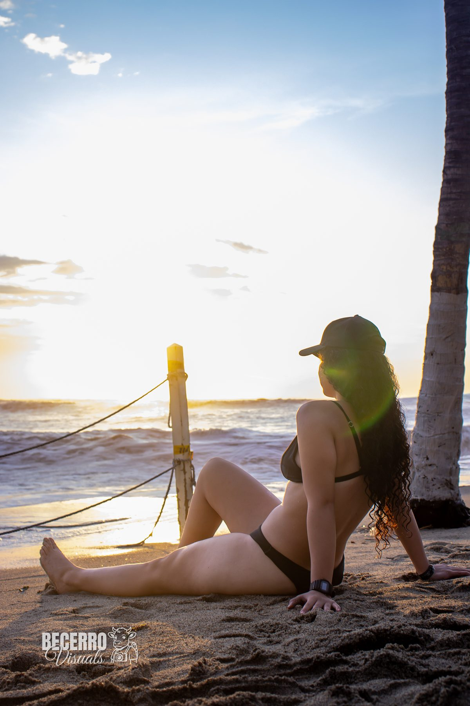
Narrativas visuales que capturan el contraste, la luz y la cinematografía en cada encuadre.
Como filmmaker y creador visual profesional, entiendo cada fotograma como un lienzo de infinitas posibilidades estéticas y narrativas. Mi enfoque combina el rigor técnico del cine industrial con la sensibilidad artística de la fotografía de autor.
Especializado en capturar la esencia de marcas, artistas y narrativas humanas con un enfoque marcadamente minimalista en blanco y negro, donde las sombras revelan más que la propia luz. Cada encuadre se planifica al milímetro para contar una historia duradera.
Una curaduría de capturas cinematográficas, retratos de autor y dirección de arte visual en blanco y negro.
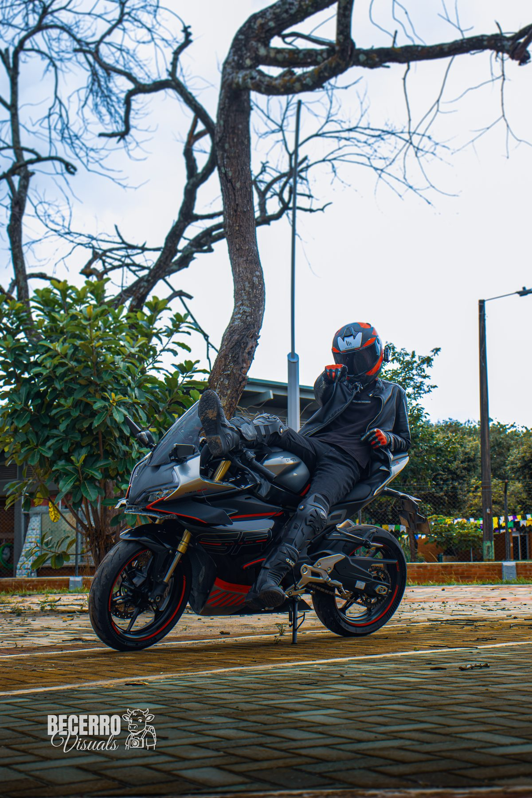
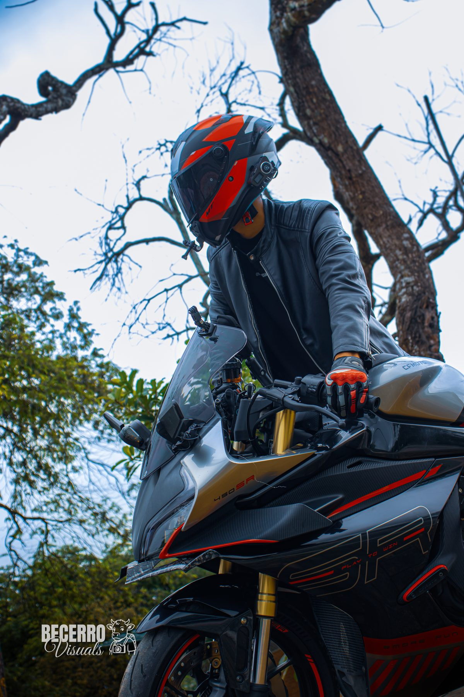
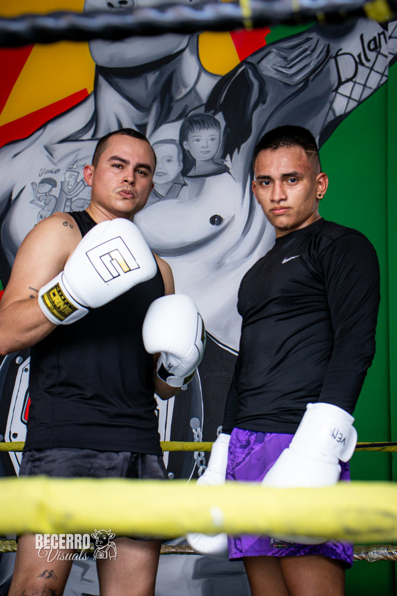
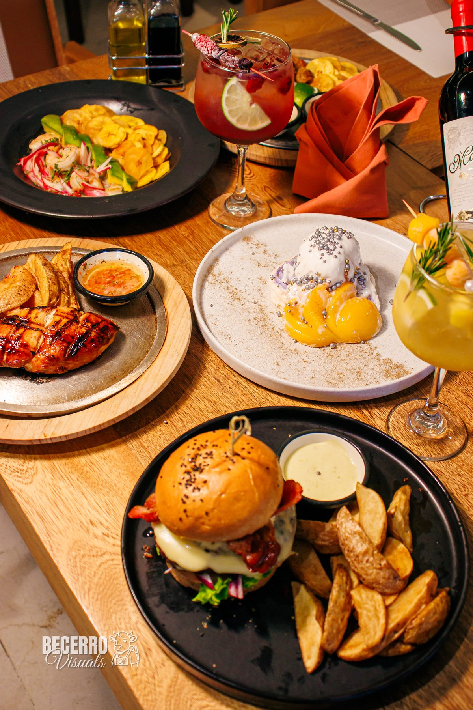
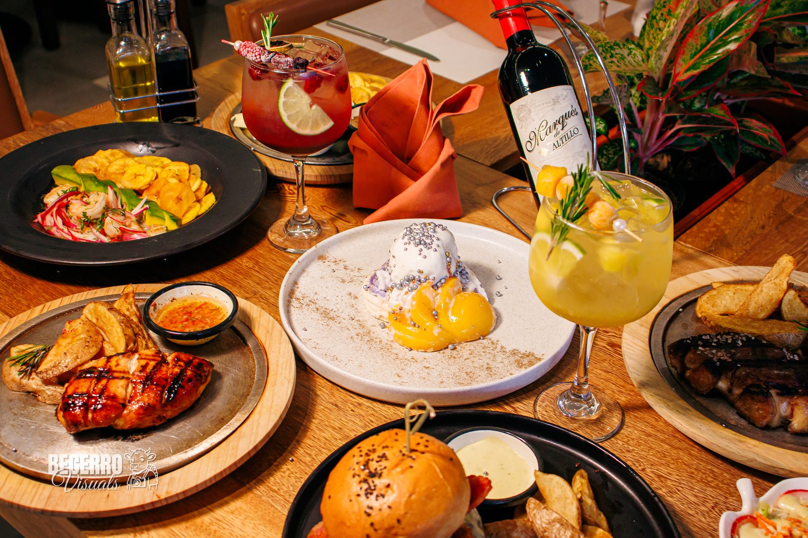
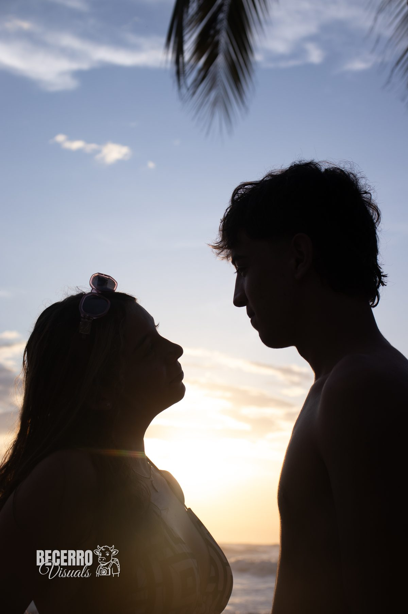
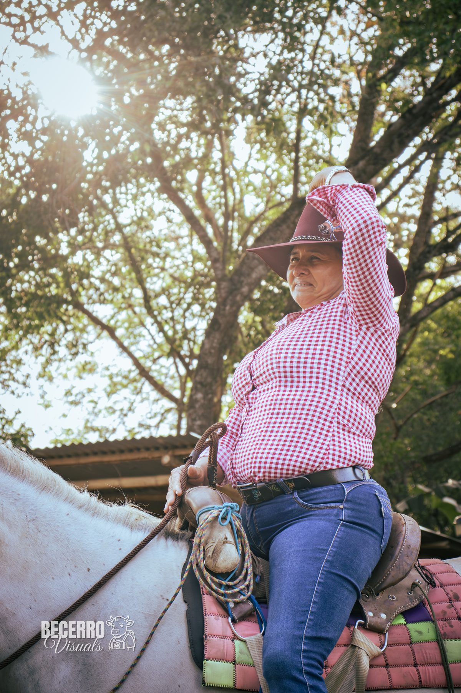
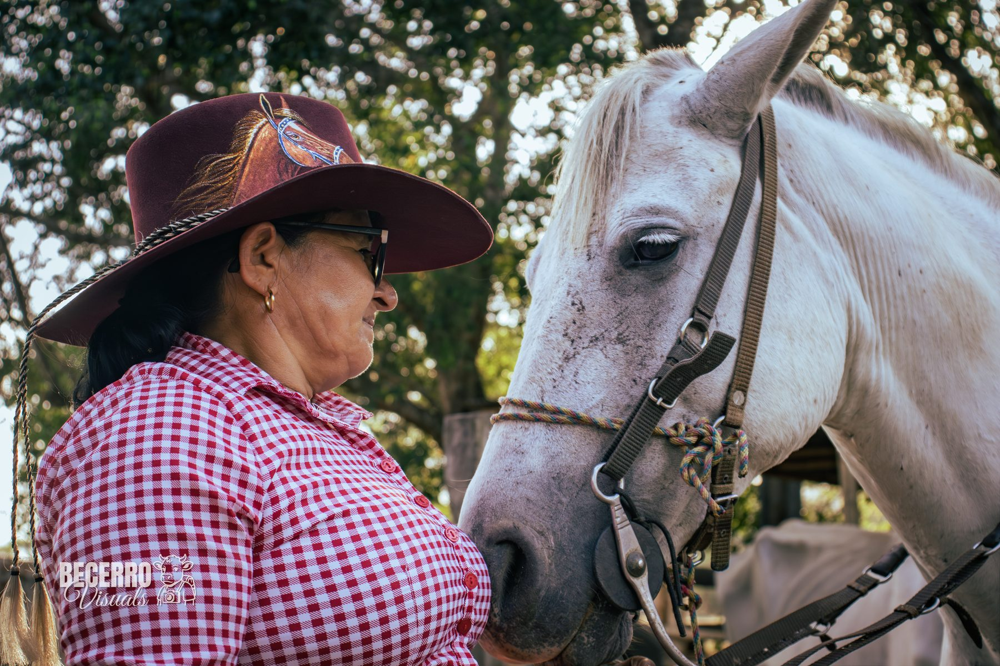
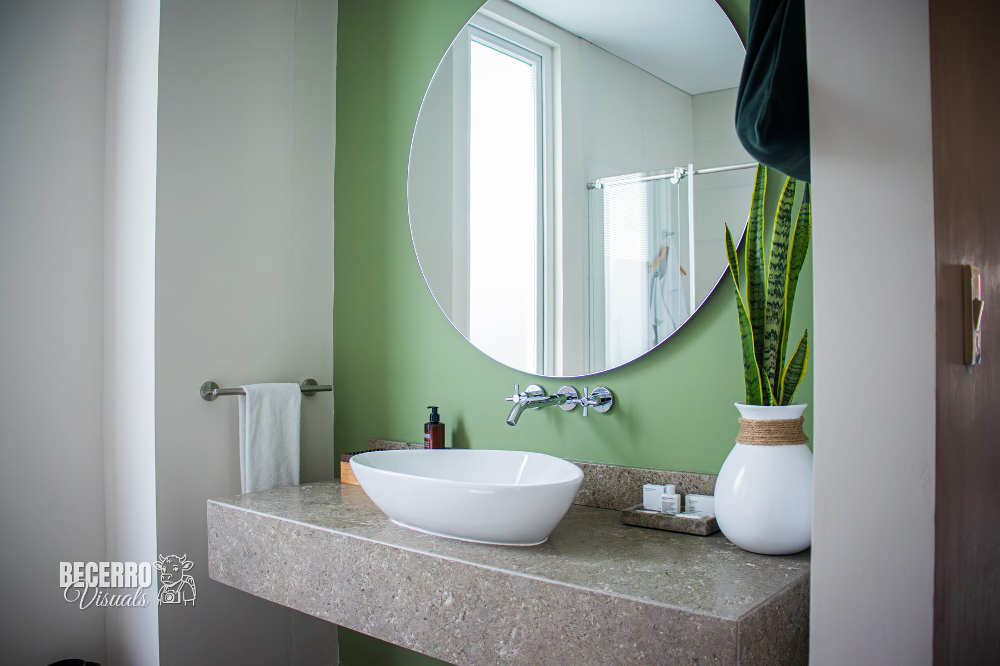
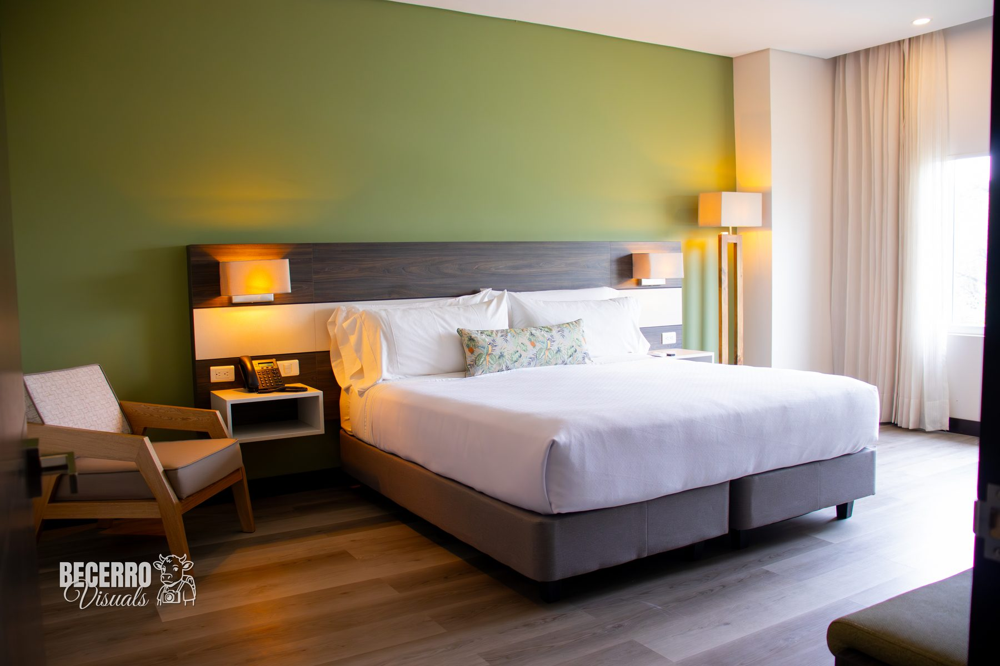
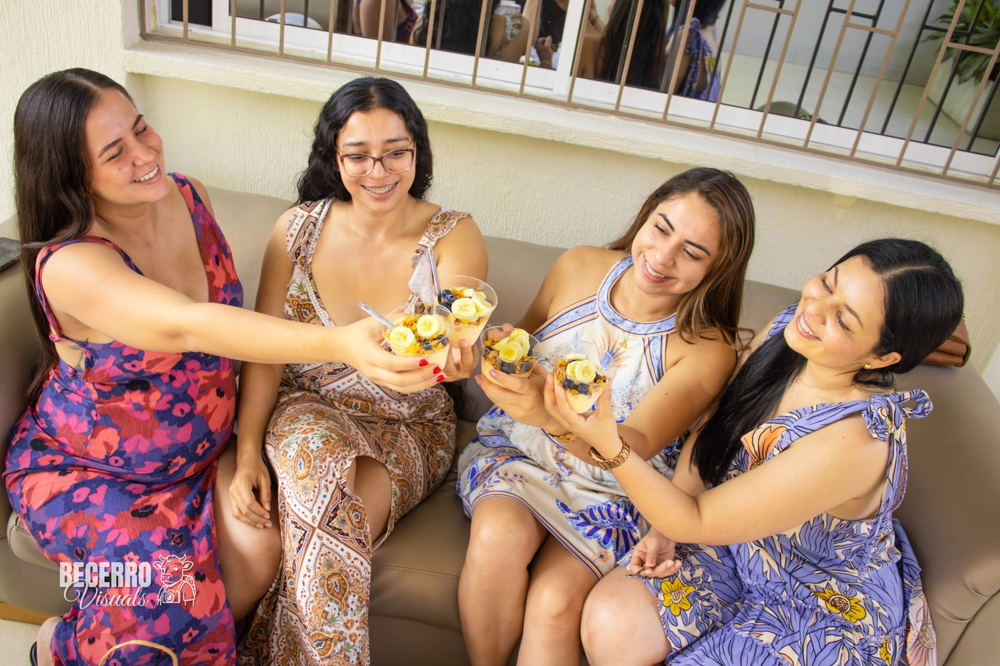
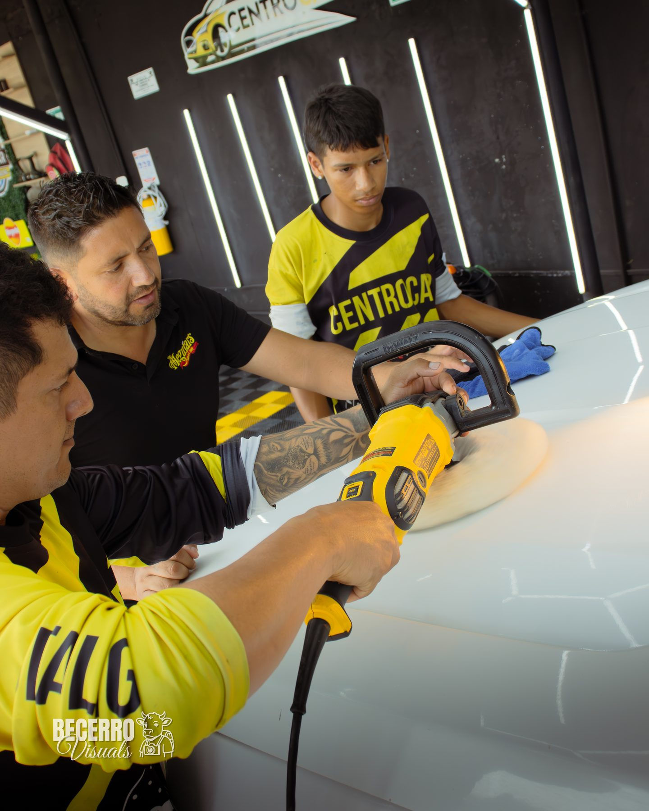
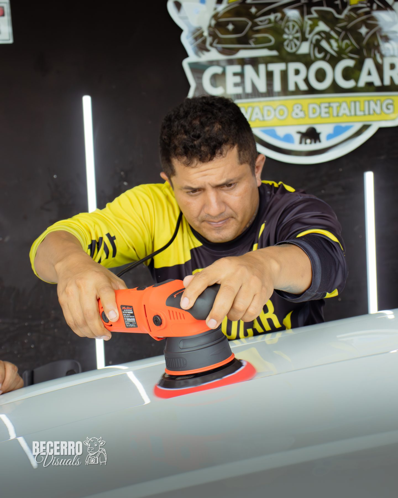
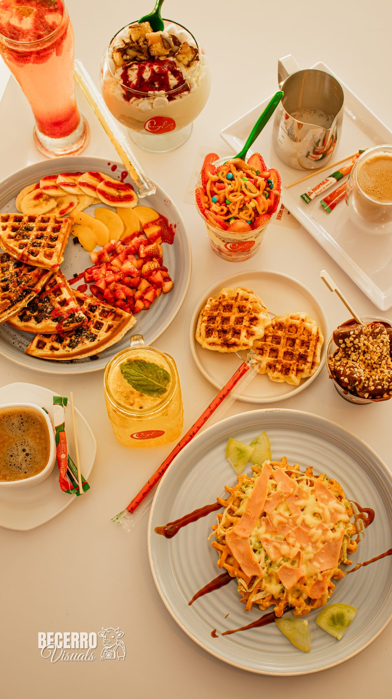
Soluciones visuales que elevan el estándar de marcas, artistas y proyectos cinematográficos con narrativa única.
Producción audiovisual de inicio a fin. Dirección creativa, dirección en set y realización técnica para comerciales, videos musicales con estética cinematográfica y documentales cautivadores.
Responsable del aspecto visual global en sets de filmación. Control estricto de la iluminación (chiascuro, luz dramática), selección de lentes de cine, composición de cámara y lenguaje técnico adaptado a la narrativa.
Sesiones fotográficas con identidad marcada. Retratos artísticos de autor, campañas editoriales de moda, fotografía arquitectónica e industrial con enfoque de gran contraste y elegancia minimalista.
El montaje final donde el ritmo y la emoción se consolidan. Corrección de color y etalonaje digital cinematográfico (Color Grading) en DaVinci Resolve, potenciando el ambiente, los contrastes y las curvas tonales.
Disponible para rodajes comerciales, dirección de fotografía, cortometrajes y sesiones editoriales en todo Colombia y proyectos internacionales.